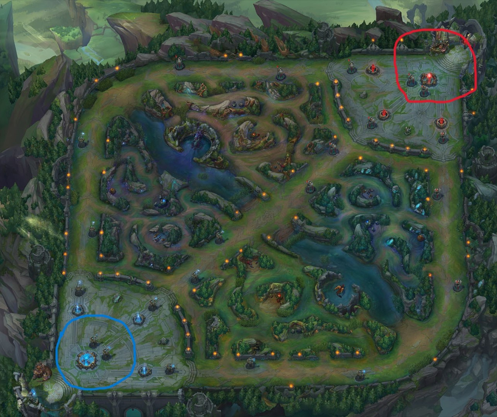
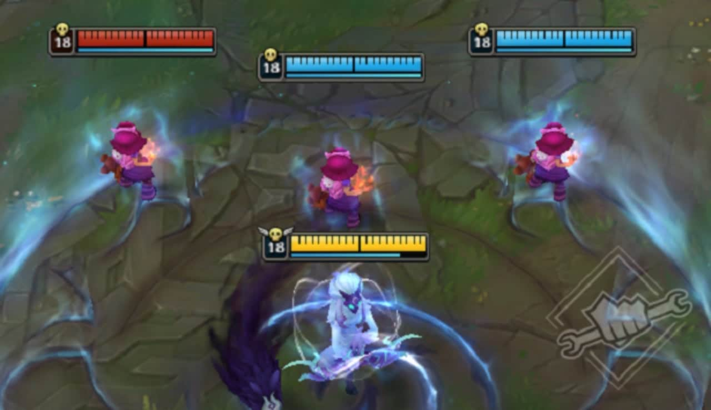
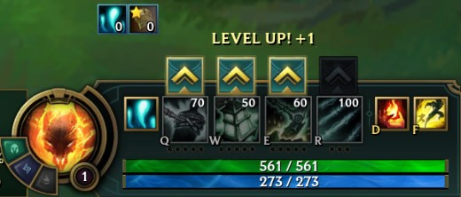
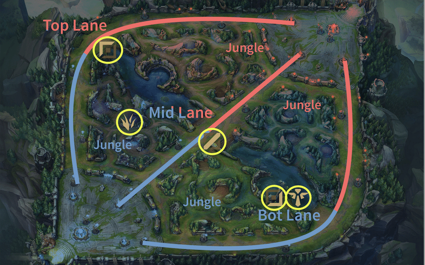
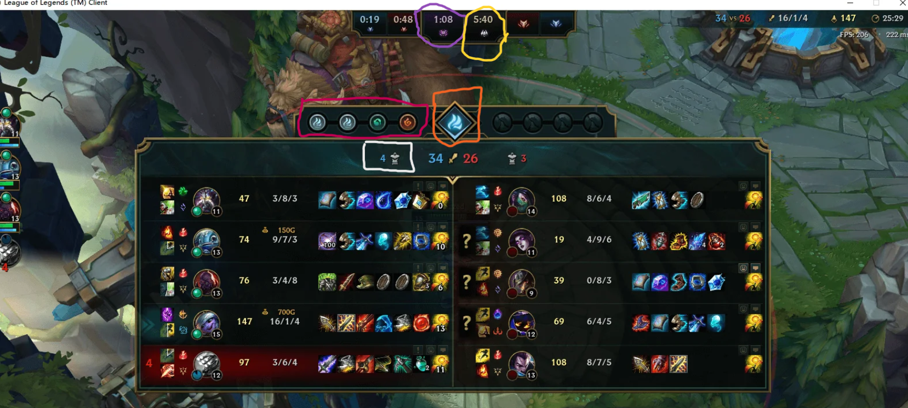
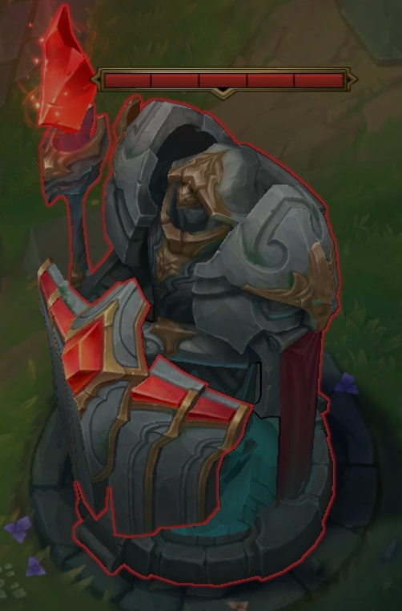
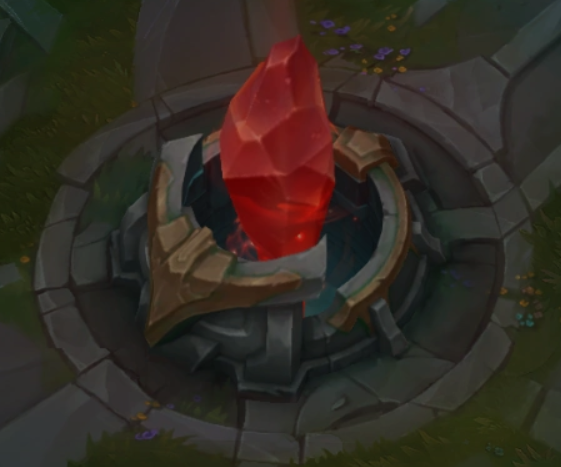
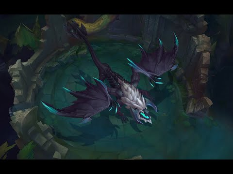
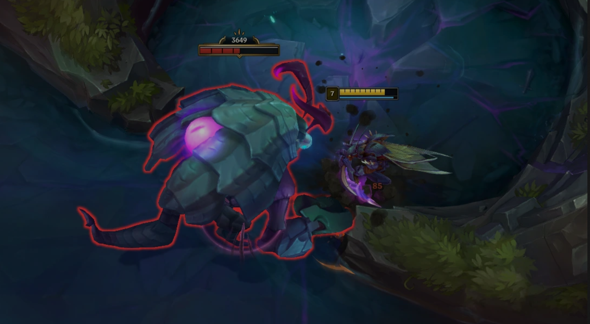

Are you a new player who has just downloaded the game? Are you a veteran who needs to refresh their memory
about the game? Or do you just find the game too daunting? If you answered yes to any of the
questions, then this guide is for you!
This guide will be covering the following topics:
1. What is league of legends?
2. How do I pilot my character?
3. Role assignments
4. What do I do during the game?
5. What does gold do?
6. What are runes? Summoner spells?
7. How do I get better in general?
1. What is league of legends?
League of Legends is a team-based strategy game where two teams of five powerful champions face off to destroy
the others enemy nexus, nexus basically referring to the core, which when destroyed, ends the game.

Here is a map of the game, with blue side (blue circle) and red side (red circled) highlighted. At the start of
the game, you and 4 other teammates will spawn at either nexus.
In order to clear a path to the nexus, you will have to destroy the towers standing in you and your allies'
way. Minions will spawn on both sides, which would help you destroy these towers and eventually the nexus as
well.
You begin at level 1 and gradually get stronger throughout the game by gaining experience and earning gold to
buy items.
Your team and the enemy team will continually grow in power and collide. Eventually, one team is able to get
the upper hand and make a final push for a victory.
2. How do I pilot my character?
Every champion has auto-attacks and abilities at their disposal. Auto-attacks, also known as “basic attacks”
occur when a player right clicks on a target, continuing until it dies. Abilities are cast using Q, W, E, and R.
Every champion has abilities that are unique to them for each of these buttons. Here is Xayahs ultimate
"Featherstorm", in action below (1st gif), as well as Aphelios using multiple abilites below (2nd gif)
A major aspect that sets champions apart is the distribution of their stats. Stats represent a champions make
up as far as how hard they are to kill, how much damage they do, and how fast they move or attack.


In the image above, the yellow bar represents your own health, the blue bar your allies' health, and the
red bar your enemies' health. Most champions have a mana bar (blue bar below the health bar) which can be
replenished at the spawn point, as well as in battle (albeit more slowly)
Different champions have different stats, and as you level up, you gain more health, mana, and can level up
your abilities
3. Role assignments
In a standard game of League of Legends, each of the five players on a team is assigned to one of the five
specific roles. The five roles are Top, Jungle, Mid, ADC (Attack damage carry), and Support.
Before a match, you have the opportunity to select a primary role which indicates the role youd prefer to
play, as well as a secondary role which represents a backup choice.

I will give a brief description of all 5 roles in league of legends, so see which one you prefer the most,
or just go ahead and try them all!
Role
Description
Top
Do you like operating alone instead of spending most of the time with your team?
Are you a 1v1 combat enthusiast who enjoys the nuances of dueling?
Can you lean on your own skill to win the game by creating undeniable pressure on your foes?
Jungle
Are you a strategist that likes to plan your moves and stay a step ahead of your enemies?
Do you like travelling everywhere on the map and being able to help your teammates?
Do you relish the opportunity to invade, ambush, and steal from your foes?
Mid
Are you a jack-of-all trades who enjoys doing a little bit of everything?
Can you easily execute spell combos without missing a beat?
Are you a team player who also enjoys solo play?
ADC
Do you prefer to be protected by your teammates rather than being the protector?
Can you position properly while outputting damage from afar?
Want to farm to the point of being able to carry your team single-handedly?
Support
Do you enjoy the laning aspects of league but dont want to worry about farming?
Does working with others bring you more joy than working alone?
Are you a player who sees the big picture and excels at controlling the crucial areas of the map?
These concepts are leaning more towards being intermediate than beginner, but I want to quickly go over them
since you will likely hear the terminology of the three phases: early game, mid game, and late game.
The phases arent set in stone and act more as guidelines as every game is different in its own way, but they
tend to hold true to regarding how the majority of games turn out:
Early game (the first 15 minutes)
This is when all the turrets are up and everyone is in their lane except for the junglers.
Until the jungler arrives, top and mid will mostly be 1v1 and bot lane will mostly be 2v2.
Mid game (15 to 30 minutes)
At around 15 minutes, or when the first turrets begin to be destroyed, the mid game begins.
During the mid game, a match becomes messier than lane phase as some players will remain in lane while others
will begin to roam around the map to help destroy other turrets or contest dragons or Rift Herald, which are
objectives that will be covered soon.
Late game (after 30 minutes)
The mid game usually ends and around the 30 minute mark when all of the first turrets in the lanes are
destroyed (sometimes even more are gone by then). This is the late game.
At this point, champions have acquired many of their major items and teams begin to group for large
teamfights around Baron and Elder Dragons.
Objectives

The picture above shows the ingame scoreboard that shows everything you need to know during the game.
It can look quite complicated at first, but we will just be focussing on the top part of the scoreboard.
The white area shows the number of structures that your team have destroyed.


The red area shows the number of dragons that your team have slayed. (Allied team: Left, Enemy team: Right)
Since dragons require quite a bit of explaining, you can watch this video to gain a basic understanding of
this objective.
Basically, The first dragon will always appear at 5:00 in every LoL match. But if you slay it in 7:55 for
example, the next dragon will spawn at 13:55.
There is no way of controlling which dragon is going to spawn next in LoL. You can only check which drake
will be next either in the logo on the dragon pit or when you press “TAB”.
The orange area represents the current dragon soul. When it lights up, it shows the type of dragon soul
that your team currently has.
If your team collects 4 dragon buffs (no matter the combination), you'll get the dragon Soul buff of the
third dragon’s type (right to left).
The Soul is a powerful permanent buff that often determines whether you'll win the game or not.
The purple area represents the timer for when the Baron Nashor will spawn. (20 minutes)
Baron is the most powerful monster in Summoner's Rift so you'll need multiple team members to slay it
unless a match goes on for a very long time
Killing the Baron grants the following buff:
If you do not outright win by pushing with Baron minions, the enemy base will likely be destroyed enough to
make your future attempts much easier.
The yellow area represents the timer for when Elder Dragon will spawn (35:00 minutes or six minutes after
the soul is taken.)

Once you are able to kill the elder dragon and get the Aspect of the Dragon's buff (Elder buff), it's
pretty much game over.
This buff basically instantly kills any enemy lower than 20% health, unless they become invulnerable.
One objective that was not included is the Rift Herald. The Rift Herald is a monster that resides in the
Baron pit before Baron is slain, and spawns 8 minutes in.

The Herald is quite tanky so you may need multiple members of your team to kill it.
A crucial tip to remember is that it has a weak spot on it's back that will inflict additional damage if
you hit it.
After a team kills the Herald, a purple item, called Eye of the Herald (right), will drop that one allied
team member can pick up
The Eye of the Herald will remain in your inventory for 4 minutes and expire if not used.
When used, the Eye will summon the Herald to fight for your team by attacking enemy structures until it
dies. Refer to the gif attached
Something more general to note is that the dragon pit and baron pit are 2 different locations. The baron
pit is near top lane, and the dragon pit is near bot lane.
5. What does gold do?
Gold is the in-game currency of League of Legends. It is used to buy items in the shop that provide
champions with bonus stats and abilities, which in turn is one of the main ways for champions to increase
their power over the course of a game.
At the beginning of the game, champions are given 500 starting gold to buy items, and can receive more gold
through various means.
Since this is a beginners' guide, I will only be touching on the ways to earn gold and how to purchase
items for your champion.
Minions and jungle monsters
Gold can be earned by dealing the killing blow ("last hit") to enemy minions and neutral monsters in the
jungle. The gold earned from minion kills is dependent on the game time. As the game progresses, each minion
is worth more, while jungle monsters award the same amount of gold.
Certain monsters give gold globally, (Rift herald, Dragons, Baron) providing gold for the entire team. The
champion who lands the killing blow receives additional gold.
Champions
Likewise, killing enemy champions and assisting in killing enemy champions also grant gold. A kill is 300
gold, an assist is 150 gold, split amongst all the assistants.
As you slay more and more enemies, you will be worth more gold if the enemy manages to slay you. This would
reset once you are slain.
If you get slain repeatedly, you will be worth less gold to the enemy. This would reset if you slay an
enemy.
Turret and Turret platings
Damaging a tower decreases it's total heath pool, and when you destroy 1 plate from it, it rewards 175
gold, split amongst teammates near the tower (local gold). Destroying a tower awards 50 gold to all
teammates, and 250 local gold.
Do note that tower plates disappear 14 minutes into the game, so make sure to utilise the Rift herald to
get as many tower plates as possible.
Spending gold
To spend your gold, you need to be at your spawn point and open up your shop menu (default hotkey is "P")
This guide isn't going to go too in depth on what items to buy as which champion, but you should always be
spending your gold.
Imagine you are in top lane and kill your lane opponent 1 time and dont spend the gold that you get from
the kill. You decide to stay in lane. When your lane opponent comes back, he has spent his gold from killing
minions to buy items and is going to come back even stronger than you.
Thus by spending your gold, you maintain a lead against your opponents.